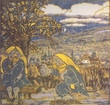
Váchal: Vodníci
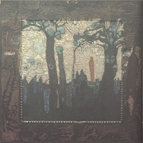
Váchal: Vzývaèi ïábla
Jak se lišíš od ostatních lidí?
Co bys na sobì chtìl/a zmìnit? Proè?
Máš nìjaký vzor? Jaký?
|
SOLITÉØI
Nìkolik spisovatelù lze pro jejich výraznou osobitost jen stìží pøiøadit k nìjakému významnému proudu v literatuøe. Mezi tyto vyhranìné individuality, experimentátory a prùkopníky patøí Weiner, Váchal, Klíma nebo Weiss. První tøi jmenovaní bývají nìkdy oznaèováni za expresionisty (spolu s Vanèurou, Demlem i Haškem), to ale platí jen pro velmi malou èást jejich tvorby. Váchal byl zároveò originálním výtvarníkem a tvùrcem bibliofilských tiskù. Dalšími výraznými individualitami v malíøství byli Josef Šíma, František Kupka, Vojtìch Preissig nebo Zdenek Rykr.
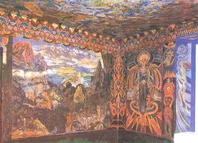
Váchal: Portmoneum
|
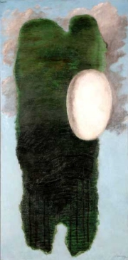
Šíma: ML
Jaký je rozdíl mezi individualistou, individuem, samotáøem, svérázem, egoistou, podivínem, poustevníkem, divným patronem a introvertem?
Kdo je podle tebe osobností?
|
Josef Váchal (1884-1969)
Váchalovým rodištìm byly Milavèe u Domažlic, zemøel ve Studeòanech u Jièína. Byl synovcem Mikoláše Alše. Vyuèil se knihaøem. Svéráznými nástìnnými malbami a vlastnoruènì vyrobeným nábytkem vyzdobil Portmoneum v Litomyšli. Zaujal ho anarchismus a okultismus. Spolupracoval s èasopisem Meditace, byl èlenem výtvarnické skupiny Sursum a spolku theosofistù. Tvoøil stranou zájmu odborného i širokého publika. Jeho prózy i výtvarná díla se vyznaèují svérázným stylem na pomezí expresionismu, symbolismu a secese. Své knihy tiskl na ruèním lisu v poètu nìkolika kusù jako bibliofilie, které zdobil vlastními barevnými døevoryty, a ruènì vyøezával i všechna písmena. Takto vydal tisky Ïáblova zahrádka aneb Pøírodopis strašidel, Koruna bludaøstva to jest Postyla kacíøská, Mor v Korèule, Krvavý román, Receptáø barevného døevorytu, Èertova babièka nebo Šumava umírající a romantická (tato kniha váží 20 kg). Je rovnìž autorem vzpomínek Malíø na frontì a Pamìti nebo parodie na Poeova Havrana a Máchùv Máj.
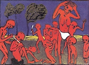
Váchalùv obraz
|
Josef Váchal: Krvavý román
Krvavý román je parodií na tehdy oblíbené krváky. Kniha zaèíná „odbornou studií“ o krvavých románech. Další stránky jsou vlastnì ukázkou „vzorového“ krváku. Autor se snaží vytvoøit co nejkrvavìjší dílo. Složitì splétá osudy mnoha postav, v nichž není nouze o stìží uvìøitelné zvraty. Kvùli nedostatku papíru ale nebyla kniha dopsána...
Nízký (brakový) obsah románu kontrastuje s exkluzivní bibliofilskou podobou. Knihu lze èíst i jako klíèový román, napøíklad sám Váchal v nìm vystupuje jako døevorytec Paseka, Mistr Fragonard, najdeme zde i jeho mecenáše Portmana nebo další skuteèné osoby.
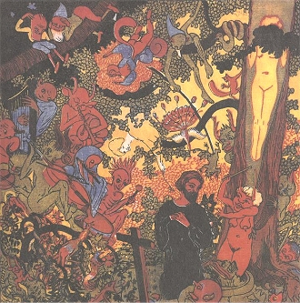
Váchal: Pokušení svatého Antonína
|
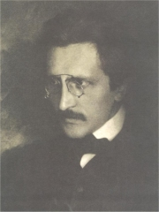
František Drtikol: Váchal
Jak Váchal dosahuje komického vyznìní svého vyprávìní?
Váchal své knihy rovnou vyøezával, neprošly tudíž rukou korektora. Najdi v ukázce pravopisné chyby. Myslíš si, že by je mohl nadìlat schválnì? Proè?
Znáš i jiné parodie? Co zesmìšòují a jak?
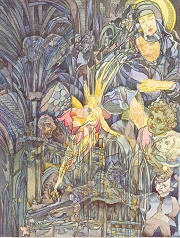
Váchalùv obraz
Jak se ti líbí Váchalovy obrazy?
Co si myslíš o Váchalovi?
Vytvoøte bibliofilii.
|
Ladislav Klíma (1878-1928)
Klíma se narodil v Domažlicích a zemøel v Praze. Vyznával subjektivní idealismus, který navazoval na uèení Schopenhauera a Nietzscheho. Byl vylouèen z gymnázia a dalších rakouských škol za protihabsburský výrok ve slohové práci. Žil z dìdictví a podpory pøátel. Experimentoval se svým tìlem i psychikou a nakonec propadl alkoholismu. V deliriu ukradl koèce myš a sežral ji. Zemøel na tuberkulózu. Je autorem filozofického spisu Svìt jako vìdomí a nic, esejù Traktáty a diktáty nebo Vteøina a vìènost, próz Utrpení knížete Sternenhocha a Slavná Nemesis èi divadelních her Lidská tragikomedie a Matìj Poctivý (s Arnoštem Dvoøákem). Z jeho Velkého románu zbyly jen fragmenty.
|
Ladislav Klíma: Utrpení knížete Sternenhocha
Groteskní romaneto Utrpení knížete Sternenhocha je umìleckým ztvárnìním Klímovy filozofie. Støetávají se v ní výrazné individuality, které opovrhují konvenèní morálkou. Sternenhoch si vyhlídne za manželku Helgu. Ta ho ale zesmìšòuje a podvádí. Kníže nechá jejího milence zabít a Helgu umuèí hladem. Když ho i po smrti pronásleduje v chorobných pøedstavách, umírá sám jako šílenec.
Pro Klímovu originální filozofii je typická skepse ke skuteènosti, jejímž dùsledkem je popøení spoleèenské morálky. Autor uznává pouze vlastní vìdomí, vùli a božskost. Okolní svìt je totiž pouze jejich projevem.
|
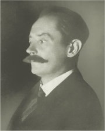
Charakterizuj Klímùv styl.
Co si myslíš o Klímovi a jeho filozofii?
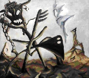
Rykr: Polní náøadí
|
Richard Weiner (1884-1937)
Weiner se narodil v Písku a zemøel v Praze. Vystudoval chemii a pracoval v potravináøských továrnách. Musel narukovat, ale po silném nervovém otøesu z váleèných zážitkù byl demobilizován. Pracoval pro Lidové noviny jako jejich paøížský dopisovatel. Referoval o surrealismu a dalších avantgardních smìrech. Seznámil malíøe Šímu s èleny francouzské skupiny Vysoká hra. Napsal básnické sbírky Rozcestí, Mnoho nocí nebo Zátiší s kulichem, herbáøem a kostkami, skladbu Mezopotámie nebo sbírky povídek Neteèný divák a jiné prózy, Lítice a Škleb. Vrcholem jeho tvorby jsou bezsyžetové experimentální texty Prázdná židle, Lazebník a Hra doopravdy.
|
Richard Weiner: Lazebník
Kniha Lazebník zaèíná charakterizací Weinerovy poetiky. Autor se v ní zaplétá do úvah nad užitím slov „náhle" nebo „náhlý". Místo dìje, který obvykle tvoøí jádro prozaického vypravování, se soustøeïuje na filozofické problémy a úvahy o jazyce, tvorbì a sdìlitelnosti obecnì. Kniha tak pøipomíná spíše esej o psaní.
Weinerovy experimenty zùstaly stranou zájmu. Znovu ho objevila až spisovatelka Vìra Linhartová, která zaèala v 60. letech psát v podobném duchu. I její knihy jsou nadmíru ètenáøsky nároèné.
|
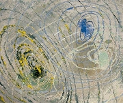
Preissig: Pavouci
Co si myslíš o Weinerovì textu?
Co je syžet a fabule?
O èem pøemýšlíš, než zaèneš psát nìjaký text?
|
Jan Weiss (1892-1972)
Weiss se narodil v Jilemnici a zemøel v Praze. Prošel èeskoslovenskými legiemi v Rusku, pracoval jako úøedník na ministerstvu veøejných prací a psal prózy s fantastickými námìty.
Je autorem povídkových sbírek Barák smrti nebo Zrcadlo, které se opožïuje, románù Dùm o tisíci patrech, Spáè ve zvìrokruhu a Pøišel z hor nebo novely Meteor strýce Žulijána. Vìnoval se rovnìž psychologické próze – Škola zloèinu, Nosiè nábytku, Povídky o lásce a nenávisti a sci-fi – Zemì vnukù, Družice a hvìzdoplavci, Hádání o budoucím.
|
Jan Weiss: Dùm o tisíci patrech
Fantastický román Dùm o tisíci patrech je alegorickou vizí odlidštìného a pøetechnizovaného svìta ovládaného despotickým vládcem. Hlavní hrdina se záhadnì ocitá na schodišti obrovského domu vyrobeného z kovu lehèího než vzduch. Vùbec nic si nepamatuje a nevidí se ani v zrcadle... Z dopisu zjistí, že se jmenuje Petr Brok a že se podvolil stavu tzv. rozptýlení, aby mohl zavraždit Ohisvera Mullera, který celý dùm i všechny jeho obyvatele ovládá. Po mnoha dobrodružných zvratech své poslání splní, sám pøi tom ale umírá. V tu chvíli se probouzí z tyfové horeèky, vše byl pouhý sen...
|
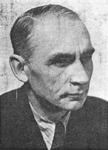
Co ses dozvìdìl/a z ukázky?
Èteš sci-fi? Co tì na tomto žánru láká?
Které další autory sci-fi znáš? Co jsi od nich èetl/a?
|
Internetové stránky
Váchal: Krvavý román
Váchal
Váchal
Váchal, výstava
Rulf: Portmoneum, èlánek
Klíma
Weiss
Weiner: Prázdná židle
Exkurze
Portmoneum, Litomyšl
Portmoneum, Litomyšl
Portmoneum, Litomyšl
Muzeum knižní vazby, Loket
Tipy
Paseka, nakladatelství vydávající Váchala
Exlibris
Filmy
Krvavý román, režie J.Brabec
|
Doporuèená èetba
Field, T.R.: Kosoètverce na ohradách, Paseka, Praha 1998
Chalupecký, Jindøich: Expresionisté, Torst, Praha 1992 (Weiner, Klíma)
Chalupecký, J.: Richard Weiner, Praha 1947
Klíma, Ladislav: Sebrané spisy, Torst
Klíma, L.: Slavná Nemesis, Volvox Globator, Praha 1991
Klíma, L.: Utrpení knížete Sternenhocha, Paseka, Praha 1990
Langerová, Marie: Weiner, Host, Brno 2000
O kovbojce a krváku, zvláštì v èeském prostøedí, SPN, Praha 1975
Oliè, Jiøí: Neznámý Váchal, Život umìlce, Paseka, Praha 2000
Pamìti Josefa Váchala, døevorytce, Prostor, Praha 1995
Soldan, Fedor: O literárním braku, Život a práce, Praha 1941
Sursum 1910-1912, Praha 1996 (katalog k výstavì)
Váchal, Josef: Ïáblova zahrádka aneb Pøírodopis strašidel, Paseka, Praha 1992
Váchal, J.: Krvavý román, Paseka, Praha 1990
Váchal, J.: Malíø na frontì, Paseka, Praha 1996
Weiner, Richard: Básnì, Torst, Praha 1997
Weiner, R.: Lazebník, Hra doopravdy, Torst, Praha 1998
Weiner, R.: Neteèný divák a jiné prózy, Lítice, Škleb, Torst, Praha 1996
Weiner, R.: O umìní a lidech , Torst, Praha 2002
Weiss, Jan: Dùm o tisíci patrech, Naše vojsko, Praha 1964
|
Vypracuj písemný referát o nìkteré z uvedených knih.
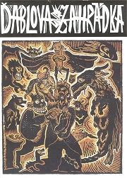
Váchal: Ïáblova zahrádka aneb Pøírodopis strašidel...
|
|